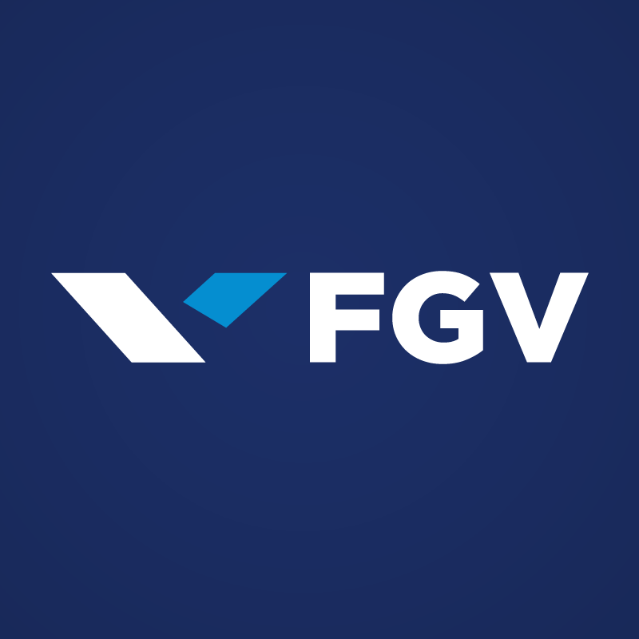

Me chamo kevin Kenji Ishii
Atualmente procuro oportunidades como desenvolvedor full-stack.
Não possuo experiência ainda na área mas acredito que minhas competências como, desenvolvimento e melhoria de processos, assim como um bom trabalho em equipe e fácil aprendizado, me ajudarão no crescimento profissional deste novo caminho.
Habilidades
- Html
- CSS
- JavaScript
- Git/GitHub
- SQL/MySql
- Pacote Office
- AutoCad
- SolidWorks
competências
- Inglês (avançado)
- Japonês (avançado)
- Soft skills de liderança e planejamento
- Rápido aprendizado e raciocínio lógico
competências
Misoya do Brasil alimentos Ltda.
Administrador operacional
- Organização da produção destinada à peças de reposição
- melhoria na média de rendimento de produção 60% à 99% ao mês
- Implementação de variadas melhorias em planejamento e controle de produção
- Intérprete Japonês-Português
Kanjiko do Brasil Indústria automotiva
Controle de planejamento de produção
- Organização da produção destinada à peças de reposição
- melhoria na média de rendimento de produção 60% à 99% ao mês
- Implementação de variadas melhorias em planejamento e controle de produção
- Intérprete Japonês-Português
Formação acadêmica

Fundação Getulio Vargas
Pós graduação em administração de empresas
Fatec Santo André
Graduação em tecnologia em mecânica automobilística